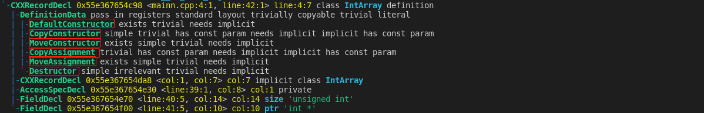
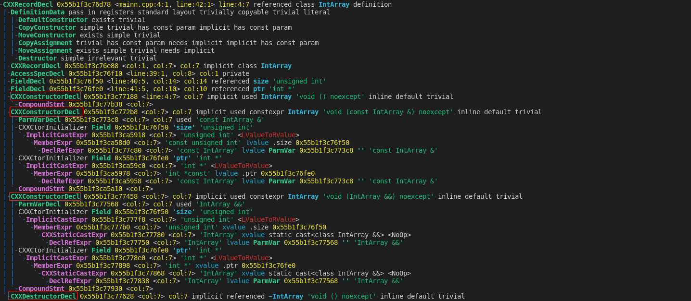
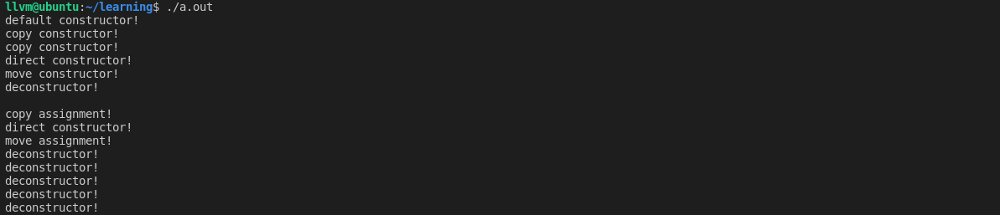
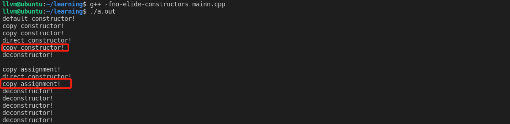

C++ 编译器自动生成的函数详解
前言
在定义一个 C++ 类的时候，编译器会为我们做很多事情，比如在某些情况下会为我们合成各种用于初始化、拷贝、移动、赋值操作的函数。那么 C++ 在定义一个类的时候编译器为我们生成了哪些成员函数呢？直接初始化和拷贝初始化调用的构造函数有什么区别吗？此处设计很多知识点，又杂又乱，所以在文章的开始处，我先把结论列出来。
- 编译器可以为我们合成默认构造函数、拷贝构造函数、拷贝赋值函数、移动构造函数、移动赋值函数、析构函数。
- 以上提到的由编译器合成的函数，只有在需要用到他们的时候，编译器才会为我们创造一个合成的版本。
- 直接初始化指的是在定义一个对象时，用形如
int a(0)的方式进行初始化，拷贝初始化是指在定义对象时用int a = 0的方式进行初始化。所以，直接初始化可能会调用拷贝构造函数，而拷贝初始化受转换构造函数 （转换构造函数是指只接收一个实参的构造函数，这种构造函数可以引起类型转换，建议在阅读本文前先弄清楚类的类型转换问题，可参考文章 C++ 类类型转换）的影响在编译器优化后可能并不会调用拷贝构造函数。 - 众所周知，如果类自定义了一个构造函数，则编译器不会再合成一个默认构造函数；拷贝构造函数、拷贝赋值函数和析构函数同理；但对于移动构造函数和移动赋值函数则不一样，只要类定义了拷贝构造函数或拷贝赋值函数或析构函数，编译器就不会为他合成移动构造函数和移动赋值函数了。
- 一个右值可以赋值给一个右值引用或者一个带 const 修饰的左值引用（目前已经实验过的，是否还可以赋值给更多类型作者也不敢下定论）。
编译器为我们的类合成了哪些函数？
直接用 clang 将下述一个简单的类的定义的语法树 dump 出来：
1 | class IntArray |

可以看到，在语法树中编译器明显的指出编译器可以用来合成的六个函数，默认构造函数、拷贝构造函数、拷贝赋值函数、移动构造函数、移动赋值函数、析构函数。但是，在类的定义中，并没有将这个六个函数真正的实现，这是因为并没有用到他们，如果修改我们的代码如下：
1 | class IntArray |

显然编译器在类 IntArray 中为代码中使用到的几个函数合成了默认的版本。由此得出结论，只有在需要用到某个可以默认合成的函数时，编译器才会合成它。观察其默认构造函数，为什么编译器合成的默认构造函数什么也没做？？
对象到底调用了哪个函数？
扩展我们的类 IntArray，为其自定义编译器可以生成的六个函数，以观察我们的对象到底调用了谁，为了屏蔽编译器的优化，加入编译参数 -fno-elide-constructors ，代码如下：
1 |
|
输出如下：

对于对象 ia1 ，由于没有给定初始值，所以调用了默认构造函数。对于对象 ia2 ，虽然是直接初始化，但是调用了拷贝构造函数，对于对象 ia3 ，采用拷贝初始化调用了拷贝构造函数。对于对象 ia4，由于存在一个显式转换，所以先调用了直接构造函数，导致生成一个临时对象，然后调用移动构造函数。如果打开编译器的优化，则优化掉第二次的移动构造函数的调用。由此可见，直接初始化和拷贝初始化仅仅是一种代码书写的形式，直接初始化有可能会调用拷贝构造函数，而拷贝初始化也有可能不调用拷贝构造函数而调用直接构造函数。对于两次对 ia1 对象的赋值，第一次调用了拷贝赋值函数，第二次赋值则调用了直接构造函数和移动赋值函数，这也是因为直接构造函数生成的临时对象是一个右值的原因，所以导致发生了移动语义。
如果我们将 IntArray 类中的移动构造函数和移动赋值函数注释掉，则上述 main 函数代码输出如下：

由显式转换生成的临时对象匹配到了拷贝构造函数和拷贝赋值函数上去了，而并没有使用编译器合成的移动构造函数和移动赋值函数，为什么？因为类已经定义了拷贝构造函数、拷贝赋值函数和析构函数，所以编译器根本没有合成这两个移动语义的函数。那为什么右值可以匹配到一个带 const 修饰的左值引用呢？我认为是因为移动语义是在 C++11 标准才引入的特性，所以这样做可以兼容 C++11 之前的代码。因此总结，在 C++11 标准出来后，一个右值可以赋值给一个右值引用或者一个带 const 修饰的左值引用。